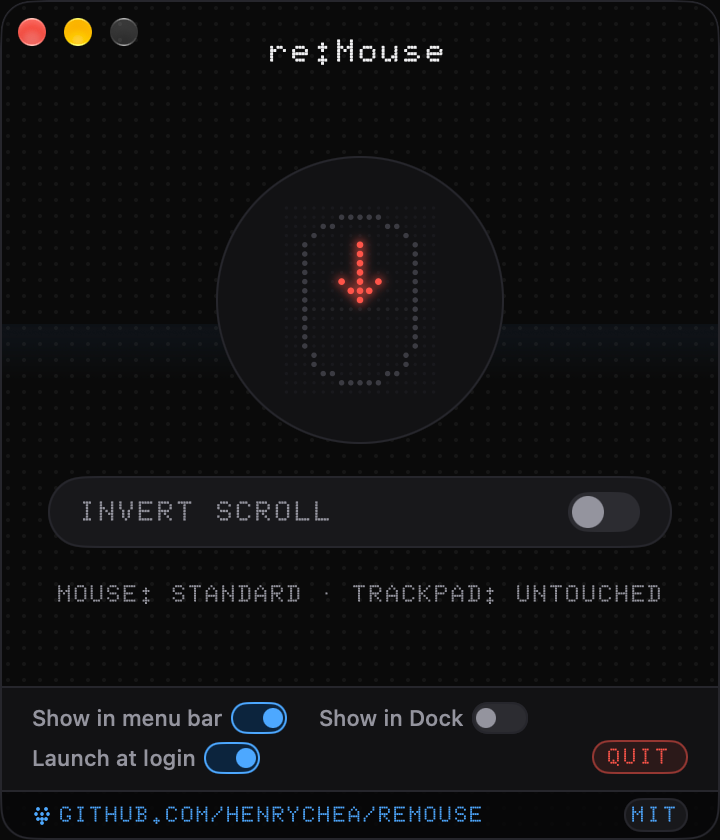
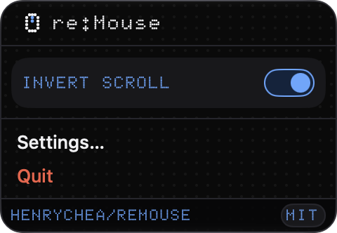

macOS menu-bar utility
Invert your mouse wheel.
Leave your trackpad alone.
re:Mouse inverts scroll direction for the mouse wheel only. Trackpad and Magic Mouse gestures stay natural, so one switch separates the two pointing devices macOS ties together.
Mouse: inverted · Trackpad: untouched
Click the mouse or the switch to flip it.
Demo
Silent 22-second loop of the re:Mouse settings window. The dot-matrix mouse shows a blue arrow pointing up and the INVERT SCROLL switch is on, with the status line reading Mouse: inverted, Trackpad: untouched. The switch is then turned off, the arrow turns red and points down, and the mouse stays untouched on the trackpad.
// Features
Mouse-only scroll reversal
Wheel only
Discrete wheel events are inverted. Continuous events (trackpad, Magic Mouse, some smooth-scroll mice) pass through untouched.
One switch
No per-app rules, no acceleration curves, no button remapping. On or off.
Light
A single event tap, no helper daemons, no third-party dependencies. Polling runs only while it waits for Accessibility permission.
Conflict check
Finds other scroll tools that would double-invert and offers to quit them.
Private
No network access, no analytics, no data stored beyond your settings.
Open source
MIT licensed. Read the whole thing in an afternoon.
// Screens
App screenshots





// Conflict check
Two inverters cancel out.
Only one tool should rewrite scroll events. At launch, and each time you switch inversion on, re:Mouse looks for the known scroll inverters and gives each one a Quit button.
| App | Status |
|---|---|
| LinearMouse | Detected |
| Scroll Reverser | Detected |
| Mac Mouse Fix | Detected |
| Mos | Detected |
| UnnaturalScrollWheels | Detected |
// How it works
Continuous or discrete. That is the whole rule.
- 01
A head-insert event tap listens for scroll events in your session.
- 02
Trackpads, the Magic Mouse and some smooth-scroll mice send continuous events. Those return untouched.
- 03
Wheel mice send discrete events. Their deltas are negated, then passed on.
macOS calls the setting Natural scrolling, and it applies to every pointing device at once: turn it on and your wheel mouse scrolls backwards too. re:Mouse separates the two, so you get natural scrolling on the trackpad but not the mouse, and the wheel keeps the direction your hands expect.
// Install
Drop it in Applications. Approve it once.
- 01
Download the DMG, open it, and drag re:Mouse onto the Applications folder.
- 02
Launch it once. macOS blocks that first attempt because the build is ad-hoc signed, not notarized.
- 03
Open System Settings → Privacy & Security, click Open Anyway next to re:Mouse, then confirm.
// FAQ
Questions
Is it free?
Yes. MIT licensed, free to download, use and modify. Builds from source with Xcode 15 or later.
Why not on the App Store?
In our tested sandboxed build, the App Sandbox refused the event tap that changes scroll events: it could only observe them, never invert them (spike result). So re:Mouse ships as a free download outside the App Store.
Why not LinearMouse, Scroll Reverser or Mac Mouse Fix?
They are good tools with more options. re:Mouse is a small Scroll Reverser alternative and a LinearMouse alternative for people who want one switch and nothing else.
Does it change my trackpad?
No. Trackpad and Magic Mouse events are continuous, and re:Mouse passes them through unchanged. Keep "Natural scrolling" on in System Settings.
macOS will not open the app. Is it broken?
No. The build is ad-hoc signed, not notarized, and since macOS 15 there is no right-click → Open shortcut. Launch it once, then approve it in System Settings → Privacy & Security → Open Anyway. Advanced: clear the quarantine flag with xattr -dr com.apple.quarantine /Applications/reMouse.app.
Why does it need Accessibility permission?
macOS only lets apps with Accessibility access install an event tap that can modify input. Grant it in System Settings → Privacy & Security → Accessibility.
Does it collect any data?
No. It makes no network connections and stores only its own settings.
How do I uninstall it?
Quit from the menu bar, delete reMouse.app from Applications, and remove it from the Accessibility list.